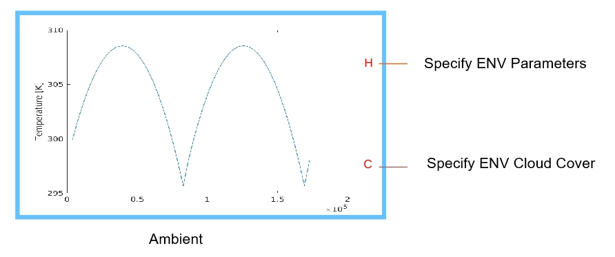

Custom Block: Ambient Model
The source code for the block is in the SSC file Components/Ambient/EnvModel.ssc.
Contents
You do not need to change anything manually in this block, other than the Cloud Cover Model section. The block parameters specified in this block are parameterized by running the workflow scripts in this project. All such parameter values end with string ' % Parameterized on :dd-mmm- yyyy hh:mm:ss '. This comment specifies at what time the block was parameterized using the workflow scripts. The block has ports:
- Port H is the thermal node to connect to the building.
- Output port C defines the cloud cover factor at any given instance in time. It can range from 0 to 1, with 0 representing a clear sky and 1 denoting a very cloudy sky.

Simulation Timeframe
All the parameters in this section are specified using the live scripts in the Workflow folder. All such parameter values end with string ' % Parameterized on :dd-mmm-yyyy hh:mm:ss '. This comment specifies at what time the block was parameterized using the workflow scripts.
- List of days, listOfDays, specified as a vector of integer values. The values of the array specify the day number of the year used in the simulation.
- Sunrise time vector, sunrise, specified as a vector of scalar values. Each value specifies the time, in seconds, for sunrise on the corrosponding day.
- Sunset time vector, sunset, specified as a vector of scalar values. Each value specifies the time, in seconds, for sunset on the corrosponding day.
- Start time for simulation, startTime, specified as a scalar value. This value defines the start time for simulation, in seconds. Even if the data for ambient model and solar model are defined for the whole day, startTime specifies the actual physical time for simulation start value.
Temperature Model
All the parameters in this section are specified using the live scripts in the Workflow folder. All such parameter values end with string ' % Parameterized on :dd-mmm-yyyy hh:mm:ss '. This comment specifies at what time the block was parameterized using the workflow scripts.
- Average day temperature vector, avgDayTvec, specified as a vector of scalar quantities. Each element of the vector specifies the average day-time temperature on the corrosponding day.
- Percent variation in day temperature, pcDayTvar, specified as a scalar value. This parameter denotes the percent variation in the temperature during the day-time, from the average value.
- Average night temperature vector, avgNightTvec, specified as a vector of scalar quantities. Each element of the vector specifies the average night-time temperature on the corrosponding day.
- Percent variation in night temperature, pcNightTvar, specified as a scalar value. This parameter denotes the percent variation in the temperature during the night-time, from the average value.
Cloud Cover Model
This section defines the value for port C, which is a measure of cloud cover on a particular day, at a given time instance. This value is passed on to the Building component, where the solar radiation is multiplied with this value. There is no solar radiation falling on the building if the value of this output port C equals 1.
- Cloud cover data option, cloudData, is a drop down list to select how to specify the cloud cover data: on an hourly basis or on a day-wise basis. This selection determines the size of parameter Cloud cover value.
- Cloud cover value, cloudCoverVal, specified as an array of scalar values. If you select Day-wise data option, then the size of this array is equal to the number of simulation days. If you select Hourly data option, then the size of this array is equal to the number of simulation hours. Each value of the array element can vary from 0 to 1. A clear sky implies a value of 0, while a very cloudy sky implies a value of 1.